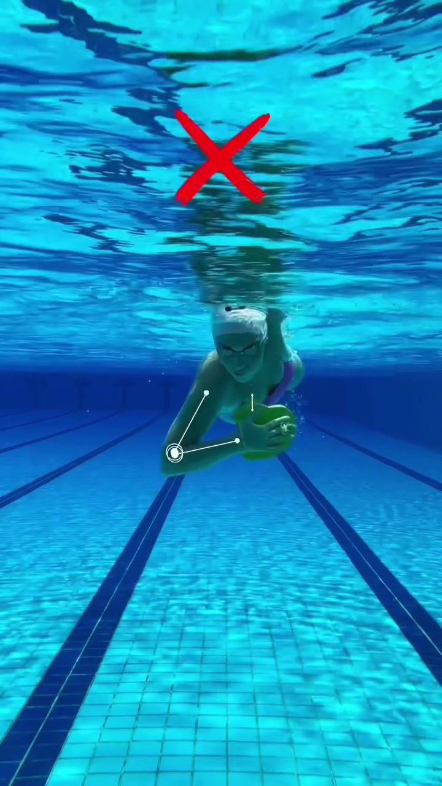
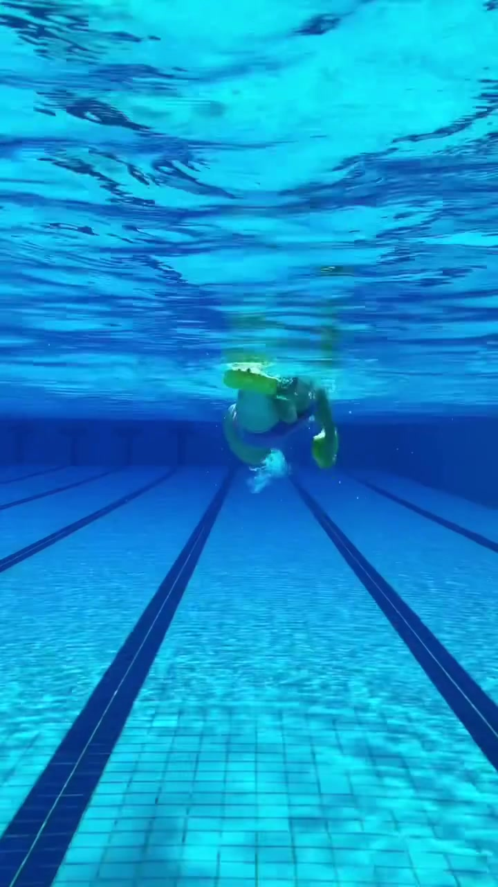
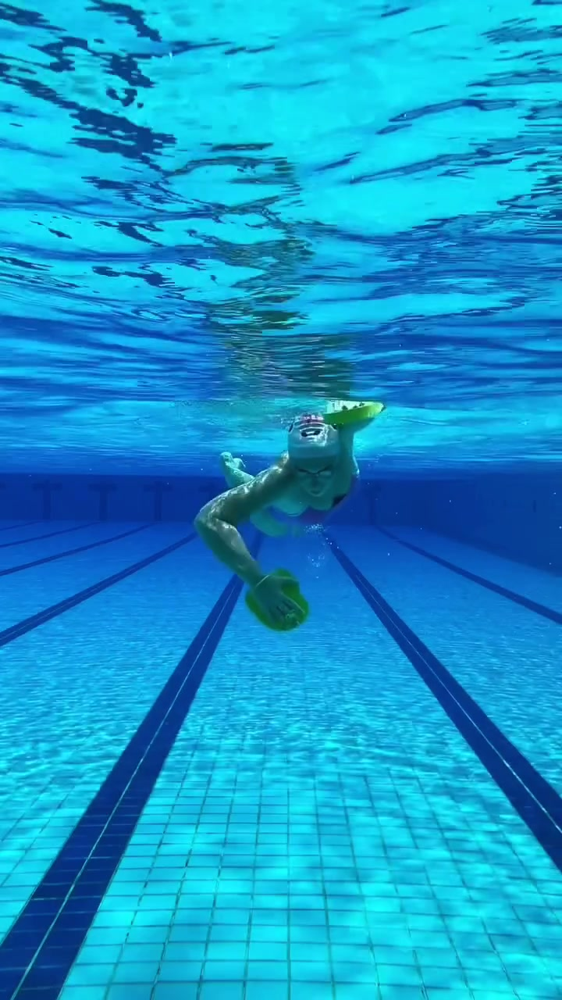

内容要点
本视频无口播内容，全程为划手错误动作纠正演示。
知识结构
[00:00→00:03]
错误诊断：肩部位置不对
学员划手时肩膀位置不正确，手臂孤立发力，没有利用肩部带动划水。教练靠近观察并准备介入纠正。
[00:03→00:06]
触觉纠正：教练按压肩部引导
教练用手按压学员的肩部，通过触觉反馈让学员感受正确的发力起点。这是关键的教学手段——用身体感受替代口头讲解。
[00:06→00:09]
正确动作：肩带臂完成高肘抱水
学员在教练的引导下调整肩部位置，完成正确的高肘抱水动作。手掌的前臂形成有效抓水角度，与肩部配合完成划水。
核心结论
自由泳划手的错误往往不是手臂本身的问题，而是肩部位置在引导手臂。教练用触觉纠正（按压肩部）比口头指令更直接有效。
图文实录
阶段一：识别错误动作
00:00 – 00:03
学员在水中做自由泳划手动作，教练在一旁观察。学员的划手手臂孤立运动，肩部没有有效参与，导致抓水深度和力度不足。

阶段二：触觉引导纠正
00:03 – 00:06
教练伸手按压学员的肩部，通过触觉引导让学员感受正确的发力起点。这种"教练手把手"的教学方式比语言描述更高效——学员不需要理解解剖学术语，只需要感受压力从哪个方向来、往哪个方向去。

阶段三：正确动作呈现
00:06 – 00:09
学员在触觉引导下调整肩部位置，手掌与前臂形成有效的高肘抱水角度。与最初的动作相比，肩部的参与让整个划水动作更加完整有力。
